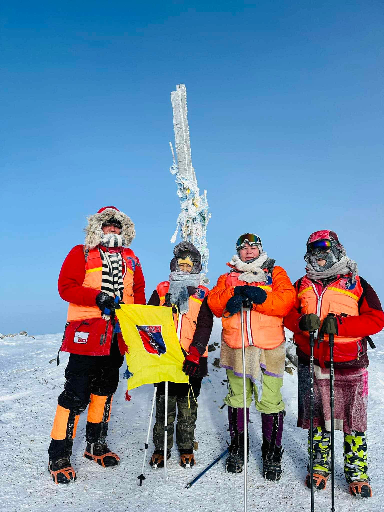
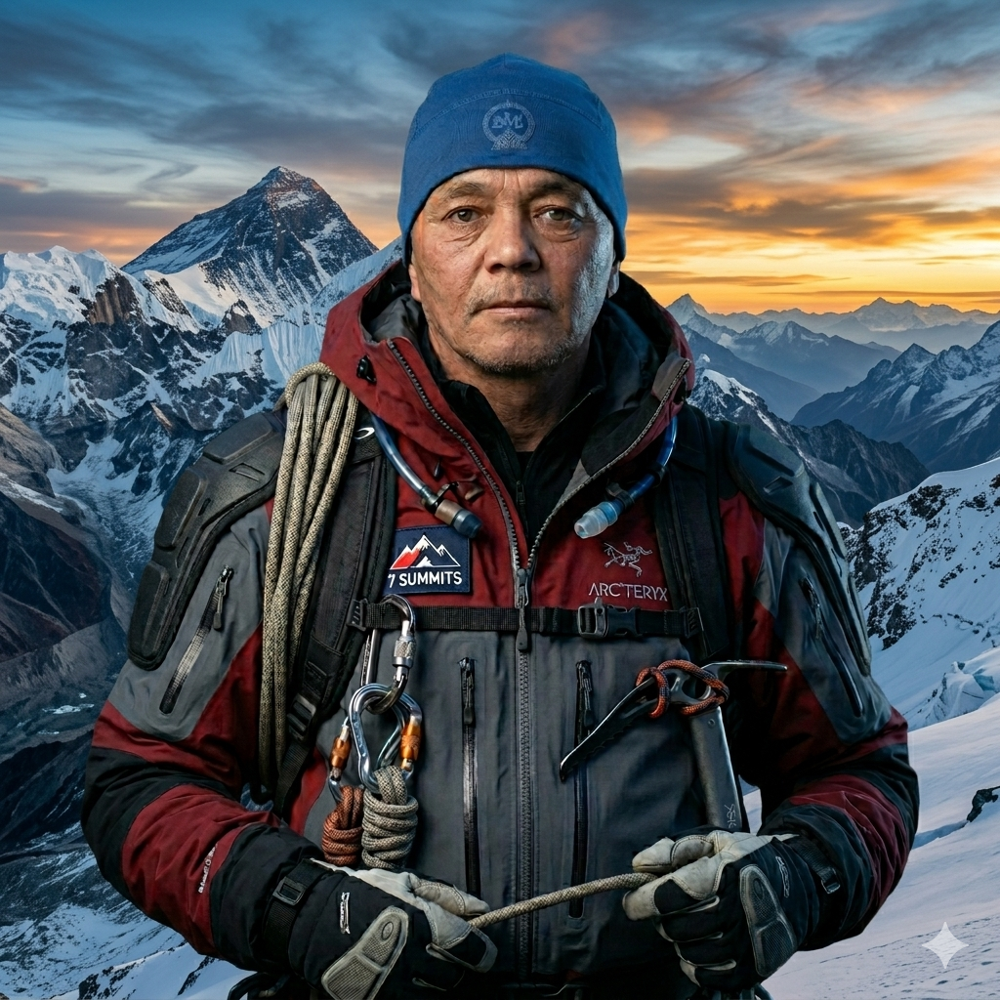
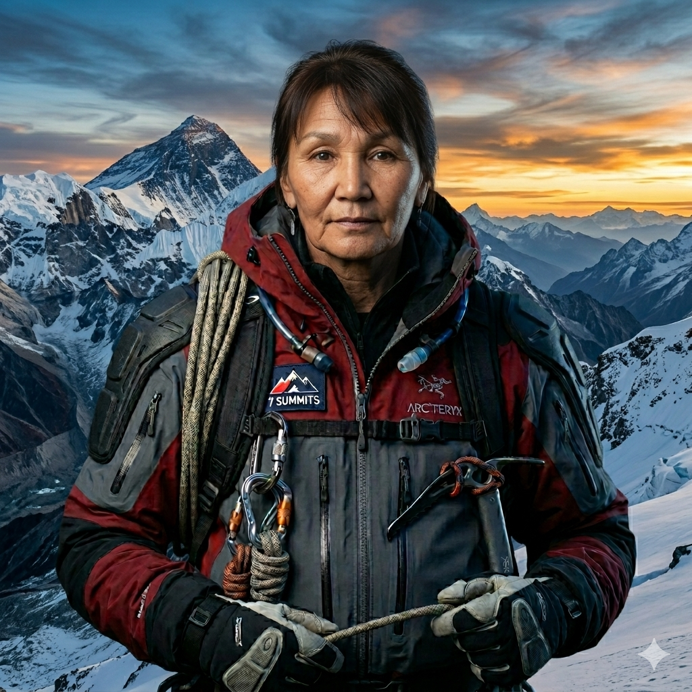
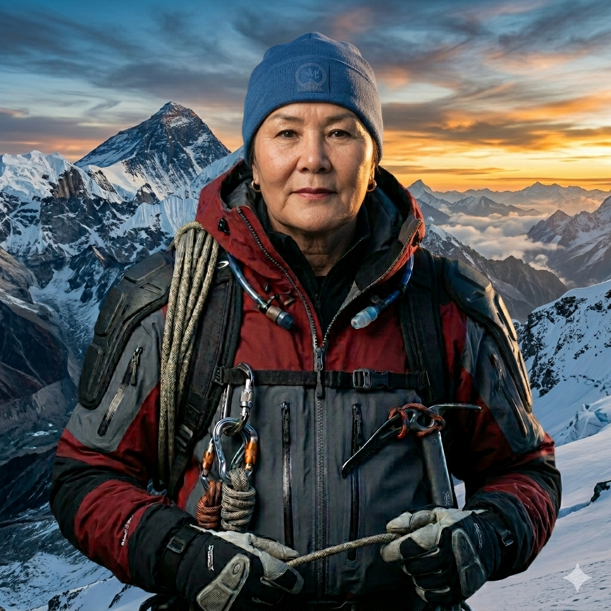

Эрхэм зорилго
Аюулгүй, хүртээмжтэй явган аяллын соёлыг бий болгож, байгалиа хайрладаг, идэвхтэй, хариуцлагатай иргэдийн нийгэмлэгийг хөгжүүлэх.
2021 оноос хамтдаа алхаж байна


ТББ-ын танилцуулга
Бид уулын зам бүрийг бэлтгэл, аюулгүй ажиллагаа, байгальд ээлтэй хандлага, багийн уур амьсгалтайгаар төлөвлөж алхдаг.
Манай ТББ нь явган аяллаар дамжуулан эрүүл амьдралын хэв маяг, байгаль хамгаалах ухамсар, нөхөрлөл, багаар ажиллах соёлыг түгээн дэлгэрүүлэх зорилготой. Бид аялал бүрийг зөв төлөвлөлт, аюулгүй ажиллагаа, харилцан хүндлэл дээр тулгуурлан зохион байгуулдаг.
Шинэ алхагч, туршлагатай аялагч гэлтгүй хүн бүр өөрийн хэмнэлээр нэгдэх боломжтой. Мазаалай 16-д аялал бол зөвхөн зорьсон цэгтээ хүрэх биш, замдаа хамтдаа өсөх үйл явц юм.
Эрхэм зорилго ба алсын хараа
Аюулгүй, хүртээмжтэй явган аяллын соёлыг бий болгож, байгалиа хайрладаг, идэвхтэй, хариуцлагатай иргэдийн нийгэмлэгийг хөгжүүлэх.
Монголын явган аяллын соёлд үлгэр жишээ, тогтвортой, найдвартай клуб болж, олон хүнийг байгальтай зөв харилцахад уриалах.
“Алхам бүр үнэ цэнтэй, зам бүр дурсамжтай.”
Үнэт зүйлс
Маршрут, цаг агаар, багийн бэлтгэлийг урьдчилан нягталдаг.
Хогоо авч буцах, зам мөрөө багасгах, байгалиа хүндлэх.
Хурдан биш, хамтдаа хүрэхийг илүүд үздэг.
Гишүүн бүр өөрийн бэлтгэл, багийн уур амьсгалд хувь нэмэр оруулна.
Аялал бүр шинэ чадвар, шинэ танил, шинэ дурсамж авчирдаг.
Бидний аялал
Хотын хэмнэлээс салж, ой мод, уулын жимээр алхсан өдөр.
Хад, гол, салхи гурав нийлсэн урт алхалтын маршрут.
Тал нутгийн нам гүм дунд багийн хэмнэлээ олсон аялал.
Ус, ой, уулсын захад замаа сунгасан олон өдрийн алхалт.
Өндөр уулын хүйтэн салхи, цас, тэсвэр шалгасан зам.
Урт бэлтгэл, тэвчээр шаардсан нуурын чиглэлийн аялал.
Түүх, байгаль, дотоод сахилга бат огтлолцсон зам.
Дараагийн аялал
Шинэ гишүүд болон тогтмол алхагчдад тохиромжтой, хөнгөн хэмнэлтэй нэг өдрийн маршрут.
Гаргасан амжилтууд
Клубын гишүүдийн хамтын алхалт, бэлтгэл, уулын замын туршлагаар бүрдсэн тоо.
зохион байгуулсан аялал
аялалд оролцсон гишүүд
аюулгүй ажиллагааны ноцтой зөрчил
Бэлтгэл, хувцас хэрэглэл, маршрутын сахилга батыг нэг түвшинд хүргэсэн аяллууд.
Анхны алхагчдад зориулсан чиглүүлэг, хөтөчтэй алхалт, аюулгүй ажиллагааны дадлыг тогтмолжуулсан.
Хогоо авч буцах, зам мөрөө багасгах, багийн хариуцлагыг аялал бүрийн үндсэн дүрэм болгосон.
ТББ удирдлагууд

ТББ-ын үүсгэн байгуулагч

ТББ-ын үүсгэн байгуулагч

ТББ-ын үүсгэн байгуулагч
ТББ-ын үүсгэн байгуулагч
ТББ-ын үүсгэн байгуулагч
ТББ-ын үүсгэн байгуулагч
Гишүүдийн танилцуулга
ТББ-ын гишүүн

ТББ-ын гишүүн

ТББ-ын гишүүн

ТББ-ын гишүүн

ТББ-ын гишүүн

ТББ-ын гишүүн

ТББ-ын гишүүн

ТББ-ын гишүүн

ТББ-ын гишүүн

ТББ-ын гишүүн

ТББ-ын гишүүн

ТББ-ын гишүүн

ТББ-ын гишүүн

ТББ-ын гишүүн

ТББ-ын гишүүн

ТББ-ын гишүүн

ТББ-ын гишүүн

ТББ-ын гишүүн

ТББ-ын гишүүн
Таны сонорт
Явган аялал нь зөвхөн ууланд гарах үйлдэл биш. Энэ нь зүрх судасны ачааллыг зохистой нэмэгдүүлэх, амьсгалын хэмнэлийг тогтворжуулах, булчин үе мөчийг ажиллуулах, мөн байгальтай ойр байх замаар стрессийг бууруулах боломж олгодог идэвхтэй амьдралын хэв маяг юм.
Хэмнэлтэй алхалт нь цусны эргэлтийг дэмжиж, биеийн ерөнхий ачаалал даах чадварыг сайжруулна.
Гадаа алхах нь оюун санааг сэргээж, өдөр тутмын ядаргаа, стрессийг багасгахад тусална.
Өгсүүр, уруудуур зам нь хөл, нуруу, core булчинг идэвхтэй ажиллуулдаг.
Багаараа алхах нь харилцаа, итгэлцэл, хамтын хариуцлагыг нэмэгдүүлдэг.
Нэгдэх
ТББ-ын үйл ажиллагаа, уулзалт, аяллын мэдээлэл авахыг хүсвэл холбоо барих мэдээллээ үлдээгээрэй.